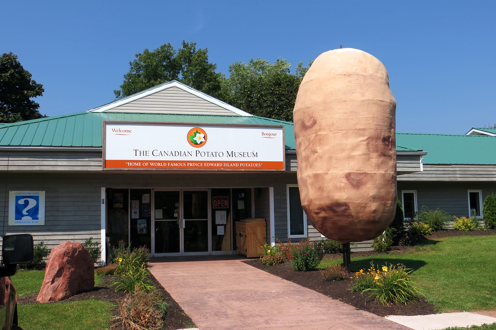

Comment ça, "Et alors"?!
Longtemps classée parmi les plantes toxiques, la pomme de terre fut d'abord destinée aux pauvres et aux catholiques irlandais, qui n'en voulurent pas, malgré les efforts de Sir Walter Raleigh. Ces derniers, fuyant la famine, en 1740, la replantèrent aux Etats-Unis ! En France, c'est Parmentier autant que la Révolution et la disette qui firent son succès.
Pour Patrick-Pierre Sabatier, médecin nutritionniste, ce légume est un excellent aliment. Son index glycémique (taux de glucose dans le sang deux heures après l'ingestion) est-il un peu élevé ? "Les chiffres fournis par les Anglo-Saxons sont inexacts, car fondés sur des variétés que nous n'avons pas en France", assure le médecin du service de physiologie et de médecine du sport du CHU Pitié-Salpêtrière, qui conseille aux sportifs la purée, plutôt que les pâtes. (source)